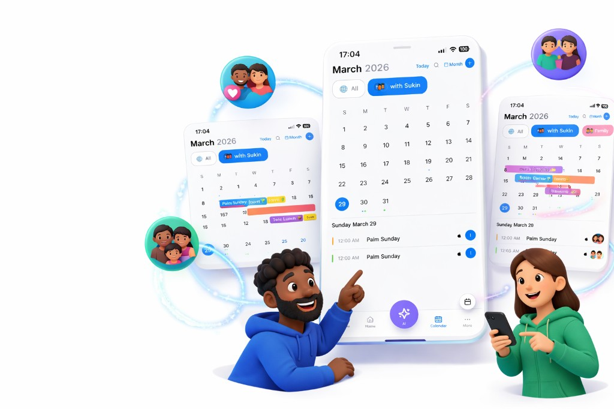

Overview
Currently developing a startup product under the advisory of Edward Kim (CTO at Gusto), in collaboration with cross-functional team members across finance and law.
The product reimagines the traditional personal calendar into a shared, relationship-centric platform, enabling users to coordinate schedules with partners, friends, and family.
By integrating AI, the system allows flexible and personalized scheduling based on user preferences, context, and intent.
What I Built
I generated the initial web application using Lovable AI, then refined and extended the system using React by resolving bugs and improving core functionality.
I converted the application into a cross-platform iOS app using Capacitor and implemented integrations with Google Calendar and Apple Calendar, enabling seamless synchronization of user schedules.
I also improved Apple Calendar-related UI/UX issues to ensure consistency across platforms.
On the AI side, I evaluated multiple approaches and integrated Google Cloud AI APIs. I designed the core logic enabling the system to interpret user intent and dynamically adapt scheduling decisions, creating a more personalized and interactive experience.
Impact (Pre-Launch)
The product is currently in its final pre-launch stage, with a soft launch scheduled this month.
It is designed to reduce manual coordination overhead and improve scheduling efficiency through AI-driven decision support. By enabling multi-user coordination and personalized AI interactions, the system aims to streamline how users plan and manage their time across personal and social contexts.
